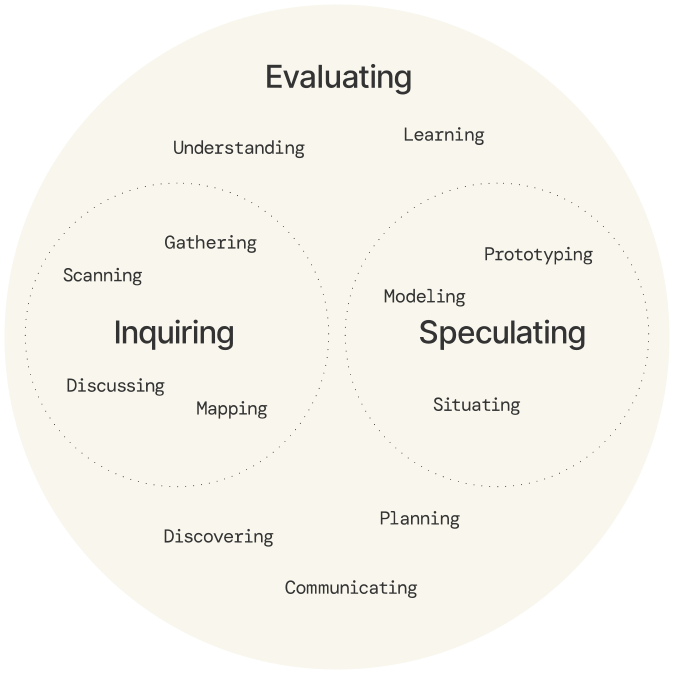

We do not believe that great design happens in a waterfall or in any prescribed sequence. Our approach is shaped through concious, fluid decision making—choosing each activity based on the particular scenario, context and moment we’re working in.
FI09: Constant Evaluation Design Model

To ensure that each activity is purposeful we developed a design model, built around a concept we call Constant Evaluation. Evaluating is core to our approach and is supported by two complementary modes of working — Inquiry and Speculation. We inquire to evaluate what's happening on the ground and we speculate to evaluate the implications of new arrangements, relationships or interactions on any given problem or opportunity space. Speculation and inquiry happen simultaneously and inform each other.
Summary of methods
Gathering
We gather any and all relevant stimulus to inform our work. Often desk-based and includes research papers, articles, and internal strategy documents.
Scanning
We scan for signals emerging from technological advances, environmental patterns and changes in socio-cultural behaviour.
Discussing
We work in the open, discussing findings, ideas, approaches, challenges and opportunities, interviewing people on the ground, asking questions and listening to others wisdom.
Mapping
We map complex relationships to explore how agency is distributed across the constituents of a system.
Modeling
We model to think, exploring ideas through multiple materials and dimensions. And we model to explain, making concepts tangible and putting them in people's hands to open dialogue.
Prototyping
We prototype to learn. From simple single use interactions to more complex sequences and arrangements to test assumptions and measure the implications of the things we make.
Situating
We situate our work in the contexts in which they will be experienced so that we can better understand the implications or affect they have on the worlds they inhabit.
Understanding
We build understanding of the implications on changes we make to the conditions in a system so that we can make better decisions about what to do next.
Learning
We aquire new knowledge through all modes of working — whether we're working in a mode of inquiry or speculating so that all work, regardless of level of success contributes to our process.
Discovering
We actively seek and record discoveries through each stage of a project so that all new contirbutions are seen by all members of a project.
Planning
We create working plans to ensure that we have concrete actions to inform what's next.
Communication
We communicate clearly and succinctly, crafting the best language for each context so that we can help ideas and approaches travel within organisations.